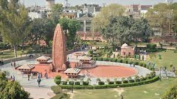

Jallianwala Bagh is a historic garden and ‘memorial of national importance’ close to the Golden Temple
complex in
Amritsar, Punjab, India, preserved in the memory of those wounded and killed in the Jallianwala Bagh
Massacre that
occurred on the site on the festival of Baisakhi, 13 April 1919. The 7-acre (28,000 m2) site houses a
museum, gallery
and several memorial structures. It is managed by the Jallianwala Bagh National Memorial Trust. It was
renovated between
2019 and 2021.
Jallianwala Bagh massacre
The Jallianwala Bagh massacre, also known as the Amritsar massacre, took place on 13 April 1919. A large
peaceful crowd had gathered at the Jallianwala Bagh in Amritsar, Punjab, to protest against the Rowlatt Act and
arrest of pro-independence activists Saifuddin Kitchlew and Satyapal. In response to the public gathering, the
temporary Brigadier general, R. E. H. Dyer, surrounded the protesters with his Gurkha, Baloch, Rajput and Sikh
troops from 2-9th Gurkhas, the 54th Sikhs and the 59th Scinde Rifles of British Indian Army. The Jallianwala
Bagh could only be exited on one side, as its other three sides were enclosed by buildings. After blocking the
exit with his troops, he ordered them to shoot at the crowd, continuing to fire even as the protestors tried to
flee. The troops kept on firing until their ammunition was exhausted. Estimates of those killed vary between
379 and 1500+ people and over 1,200 other people were injured of whom 192 were seriously injured.
Responses polarised both the British and Indian peoples. This incident shocked Rabindranath Tagore, an Indian
polymath and the first Asian Nobel laureate, to such an extent that he renounced his knighthood.
The massacre caused a re-evaluation by the British Army of its military role against civilians to "minimal force
whenever possible", although later British actions during the Mau Mau rebellion in the Kenya Colony have led
historian Huw Bennett to comment that the new policy could be put aside. The army was retrained and developed
less violent tactics for crowd control. The level of casual brutality, and lack of any accountability,
stunned the entire nation, resulting in a wrenching loss of faith of the general Indian public in the
intentions of the United Kingdom. The attack was condemned by the Secretary of State for War, Winston
Churchill, as "unutterably monstrous", and in the UK House of Commons debate on 8 July 1920 Members of
Parliament voted 247 to 37 against Dyer. The ineffective inquiry, together with the initial accolades for Dyer,
fuelled great widespread anger against the British among the Indian populace, leading to the non-cooperation
movement of 1920–22. Some historians consider the episode a decisive step towards the end of British rule in
India. Britain has never formally apologised for the massacre but expressed "deep regret" in 2019.